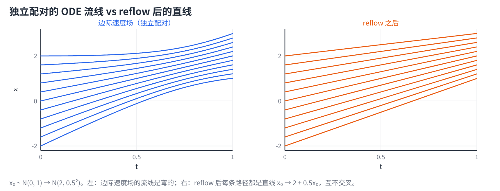
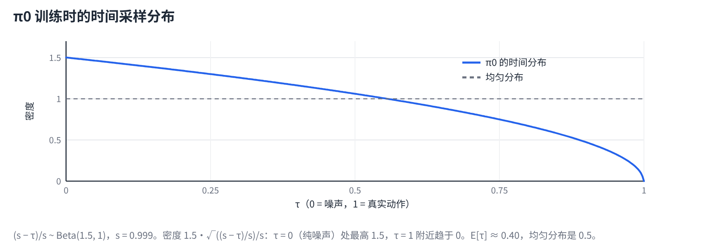
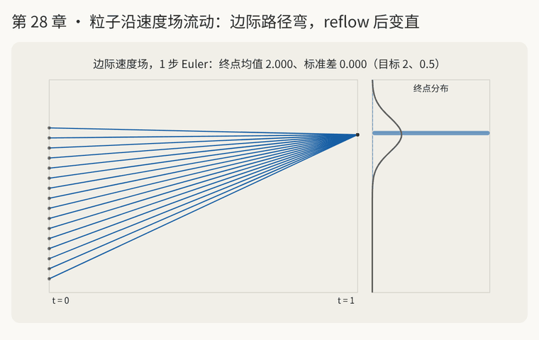

第 28 章 · Flow matching 推导：概率路径、条件目标为什么够用、rectified flow 与 π0 的动作头
本地运行
git clone https://github.com/wikieden/math-and-eval-stats
cd math-and-eval-stats/code/notebooks
pip install jupyterlab torch numpy
jupyter lab ch28_flow_matching.ipynb也可以下载后直接用 VS Code 打开 .ipynb 运行。需要 GPU 的章节在 Colab 里选「代码执行程序 → 更改运行时类型 → GPU」。
本章回答：flow matching 训练的到底是什么函数？为什么只拿"一对样本连直线"当监督（条件目标）就能学到整体的速度场？为什么采样步数少会出错，rectified flow 怎么把路径拉直？π0 的动作头在训练和推理时具体怎么做？
讲解日期：2026-11-25 · 上一章：第 27 章 扩散模型推导 · 下一章：第 29 章 测度论概率入门
对应原文：Flow Matching（Lipman 2022）diffusion-models/materials/text/papers/flow-matching-2210.02747.txt（条件目标 L209、Theorem 2 L224）；Rectified Flowtransformer-deep-dive/materials/text/papers/rectified-flow-2209.03003.txt（摘要 L21–L29）；π0vla-deep-dive/materials/text/papers/pi0-2410.24164.txt（动作头的路径与目标 L272–L284、推理 L286–L293、附录 B 时间采样 L905–L936）
本章缩写：FM = Flow Matching（流匹配）；CFM = Conditional Flow Matching（条件流匹配）；ODE = Ordinary Differential Equation（常微分方程）；u_t(x) = 边际速度场；v_θ = 网络预测的速度；x₀ = 噪声端，x₁ = 数据端（π0 原文写 ε 和 A_t）；τ = π0 里的流时间；OT = Optimal Transport（最优传输）。全部缩写见 附录 · 缩写与术语表
讲解
第一步：概率路径与边际速度场（2026-11-25）
类比：一群人从操场（噪声）走到教室（数据）。 每个人走直线，但在任何一个时刻、任何一个位置，你只看得见"经过这里的人平均往哪走"：这就是边际速度场。
线性插值路径：\(x_t = (1 - t)x_0 + tx_1\)，单条路径的速度是常数 \(x_1 - x_0\)。边际速度场是在 x_t = x 这个条件下对所有路径取平均：
ODE \(\dot x = u_t(x)\) 把 t = 0 的分布推成 t = 1 的分布（第 17 章第五步的连续性方程）。
例子（x₀ ~ N(0, 1)，x₁ ~ N(2, 0.5²)，两端都是高斯，u 有闭式：联合高斯的条件均值）：
| t | u_t(x) |
|---|---|
| 0 | 2.0000 − 1.0000·x |
| 0.5 | 3.2000 − 1.2000·x |
| 0.9 | 0.9412 + 0.5882·x |
斜率随 t 变：前半段把人群往中间挤（方差从 1 缩），后半段再按数据的形状摊开。单条路径是直的，边际流线却是弯的。
一句话：训练目标是边际速度场 u_t(x) = E[x₁ − x₀ | x_t = x]，单条插值是直线，平均后的流线一般是弯的。
第二步：条件目标就够了：回归的最优解就是条件期望（2026-11-25）
边际目标 \(\mathbb E\|v_\theta(x_t, t) - u_t(x_t)\|^2\) 算不了（u 未知）。条件目标（CFM，Lipman L209）只用一对样本：
为什么够用（Theorem 2，L224）：均方误差的最优解是条件期望（第 8 章），所以 CFM 的最优 v 就是 \(\mathbb E[x_1 - x_0\mid x_t] = u_t\)；两个目标只差一个和 θ 无关的常数，梯度相同。
例子（t = 0.5，20 万对样本，用线性函数 v = α + βx 拟合 x₁ − x₀）：拟合 3.2021 − 1.2020·x；闭式 3.2000 − 1.2000·x。对每一对样本"连直线、回归速度"，回归出来的就是弯曲的边际速度场。
一句话：条件目标的最小值点就是条件期望，所以拿"一对样本连直线"做监督，学到的是边际速度场。
第三步：采样：边际路径是弯的，步数少会偏（2026-11-25）
用 Euler 积分 \(x \leftarrow x + v_\theta(x, t)/K\) 走 K 步：
| 步数 K | 1 | 2 | 10 | 100 |
|---|---|---|---|---|
| 样本均值 | 2.0000 | 1.9977 | 1.9951 | 1.9944 |
| 样本标准差（目标 0.5） | 0.0000 | 0.1988 | 0.4282 | 0.4897 |
1 步时 \(x_1 = x_0 + u_0(x_0) = x_0 + 2 - x_0 = 2\)：所有样本落在同一个点。原因是 t = 0 处的速度"平均"了所有可能的终点。（均值 1.9944 而不是 2，是这 2 万个起点样本自己的均值偏了一点。）
一句话：速度场是平均出来的，流线弯，Euler 步数少就会"抄近路"抄到平均值上。
第四步：Rectified flow：重新配对，把路径拉直（2026-11-25）
类比：第一次大家随便配对走，路线交叉；记下每个人实际走到哪，再按"起点 → 实际终点"重新配对走直线，就不交叉了。
Rectified flow（Liu 2022，L21–L29）：用训练好的 ODE 把每个 x₀ 推到 x₁′，把 (x₀, x₁′) 当新的配对再训一次（reflow）。新配对下各条直线不交叉，边际速度沿直线不变，1 步就能走准。
例子（一维时 ODE 映射是单调的 x₁′ = 2 + 0.5x₀）：
| 1 步 Euler 的标准差 | |
|---|---|
| reflow 前 | 0.0000 |
| reflow 后 | 0.4970（这批起点样本的标准差是 0.994，乘 0.5） |
和最优传输的关系：E‖x₁ − x₀‖²，独立随机配对 5.2681，排序（一维的最优传输配对，第 33 章）4.2706，正好是 W₂² = 4 + 0.25。最优配对下路径最短、最不交叉；minibatch OT 配对的 flow matching 就是在训练时直接用近似的最优配对。

图 28-1 · 左：独立配对训练出的 ODE 流线（弯的）；右：reflow 后的流线（直的、互不交叉）一句话：reflow 用模型自己的输出重新配对，让路径变直、不交叉，少步采样就准；这和最优传输配对是同一个想法。
第五步：π0 的动作头：flow matching 生成一段动作（2026-11-25）
π0 用 flow matching 生成 50 步的动作块（π0 L272–L284）：
- 路径：\(A^\tau = \tau A + (1 - \tau)\epsilon\)（τ = 0 是噪声、1 是真实动作，和本章 x₀、x₁ 的约定一致）；
- 目标：网络 \(v_\theta(A^\tau, o)\) 回归 \(A - \epsilon\)（就是 x₁ − x₀）；
- 推理：从 \(A^0 \sim \mathcal N(0, I)\) 出发，Euler 走 10 步（δ = 0.1，L286–L293），前缀（图像、语言）的 KV 缓存只算一次；
- 训练时的 τ 不均匀采样（附录 B，L905–L936）：\(\frac{s - \tau}{s} \sim \text{Beta}(1.5, 1)\)，s = 0.999，偏向噪声多的一端。理由是动作强依赖观测，"给定观测预测平均动作"本身就难，要多练。
例子（按这个分布抽 40 万个 τ）：E[τ] = 0.4006，P(τ < 0.5) = 0.6459；均匀采样两者都是 0.5。

图 28-2 · π0 训练时 τ 的密度（蓝）和均匀分布（灰）；τ 小（噪声多）的一端密度高，τ > 0.999 不采场景代码：π0 式的训练一步和采样（PyTorch 写法，示意结构；本书环境没装 torch，没跑过）：
tau = 0.999 * (1 - torch.distributions.Beta(1.5, 1.0).sample((B,))) # 偏向噪声端
eps = torch.randn_like(actions)
a_tau = tau[:, None, None] * actions + (1 - tau[:, None, None]) * eps
loss = ((v_theta(a_tau, obs, tau) - (actions - eps)) ** 2).mean() # 条件目标
# 推理：10 步 Euler
a = torch.randn(B, 50, action_dim)
for k in range(10):
a = a + 0.1 * v_theta(a, obs, torch.full((B,), k / 10))
一句话：π0 的动作头就是本章的条件 flow matching：噪声和真实动作连直线、回归速度、10 步 Euler；训练时多抽噪声大的 τ。
动画演示：粒子沿速度场流动

可交互版：animations/28-flow-matching.html（下拉切换"边际速度场 / reflow 后"；滑块调 Euler 步数）。
怎么看：
- 每个点是一个样本，从左边 N(0, 1) 出发，按速度场往右流到 t = 1（第一步）；
- 步数 1：所有点一步跳到同一个位置（第三步）；步数加到 10，终点分布接近右边的 N(2, 0.5²)；
- 切到 reflow：路径变成互不交叉的直线，1 步就到位（第四步）。
练习与作答记录
题 1（第一步）：x₀ ~ N(0, 1)，x₁ 是确定的常数 3（数据只有一个点）。写出 u_t(x)。t → 1 时会怎样？
作答：（待作答）
题 2（第二步）：为什么不能把条件目标里的 x₁ − x₀ 换成 x₁（直接回归数据）？换了以后最优 v 是什么，ODE 还能把噪声推成数据吗？
作答：（待作答）
题 3（第五步）：π0 的时间分布里，τ 落在 [0.9, 1] 的概率大约是多少？（用 (s − τ)/s ~ Beta(1.5, 1)，s ≈ 1，Beta(1.5, 1) 的累积分布函数是 u^{1.5}）
作答：（待作答）
口诀
一对样本连直线，平均起来是边际速度；
回归的最优是条件期望，条件目标就够用；
流线是弯的，步少抄近路；
reflow 重新配对拉直线，和最优传输一个想法；
π0 动作头：噪声连动作、回归速度、十步 Euler。
本章复习卡片
ST96（边际速度场与条件目标为什么等价）、ST97（少步采样为什么偏、rectified flow 怎么拉直）、ST98（π0 动作头的路径、目标、采样与时间分布）。练习做完后，按答错、卡住的地方补上。
附录 · 延伸阅读
留给以后深入学习用，不影响本章主线。★ 是建议先读的。
推荐阅读
| 读什么 | 读哪里 | 读它为了什么 |
|---|---|---|
| ★ Flow Matching（Lipman 2022） | §3–4（Theorem 1、2，L224） | 条件目标与边际目标等价的证明 |
| ★ 《从零读懂扩散模型》第 12、13 章 | flow matching、rectified flow | 直觉版和代码版 |
| ★ 《VLA 从零到 π0》第 8 章 | 动作专家 | π0 的整体结构 |
| π0 论文 | §IV（L272–L293）、附录 B（L905–L936） | 动作头细节和时间采样的理由 |
| Rectified Flow（Liu 2022） | §2（reflow） | 拉直的理论 |
| MIT 6.S184 讲义 | 第 2–4 章 | 概率路径、连续性方程的系统讲法 |
数学原理
- 条件期望 = 均方误差最优：\(\mathbb E\|v(X) - Y\|^2 = \mathbb E\|v(X) - \mathbb E[Y\mid X]\|^2 + \mathbb E\|Y - \mathbb E[Y\mid X]\|^2\)，第二项和 v 无关。
- 高斯的条件均值：联合高斯 (Y, X) 时 \(\mathbb E[Y\mid X = x] = \mathbb E Y + \frac{\text{Cov}(Y, X)}{\text{Var}X}(x - \mathbb EX)\)；本章 Cov(x₁ − x₀, x_t) = t s² − (1 − t)。
- 直线路径 1 步精确的条件：速度沿每条流线不变（流线是直线且匀速）时，Euler 没有离散化误差。
- 最优配对：一维时排序配对让 E‖x₁ − x₀‖² 最小（第 33 章）；高维用 minibatch 上的 OT 近似。
公式清单
| 公式 | 意思 |
|---|---|
| \(x_t = (1 - t)x_0 + tx_1\) | 线性插值路径 |
| \(u_t(x) = \mathbb E[x_1 - x_0\mid x_t = x]\) | 边际速度场 |
| \(\mathbb E\|v_\theta(x_t, t) - (x_1 - x_0)\|^2\) | 条件目标 |
| \(A^\tau = \tau A + (1 - \tau)\epsilon\)，目标 \(A - \epsilon\) | π0 动作头 |
| \((s - \tau)/s \sim \text{Beta}(1.5, 1)\) | π0 的时间采样 |
代码对照：把本章的数字用代码算一遍
代码在仓库本地
math-and-eval-stats/solutions/chapter-code/ch28_flow_matching.py，配套测试tests/test_ch28.py：
bash cd math-and-eval-stats/solutions/chapter-code uv run python ch28_flow_matching.py uv run pytest tests/test_ch28.py
讲义 ↔ 代码：
| 讲义 | 公式 | 写法 | 跑出来 |
|---|---|---|---|
| 第一步 速度场 | 条件均值 | marginal_velocity(x, t) |
3.2 − 1.2x（t = 0.5） |
| 第二步 回归 | 最小二乘 | regress_cfm() |
3.2021 − 1.2020x |
| 第三步 采样 | Euler | euler_sample(1) |
标准差 0 |
| 第四步 reflow | 直线速度 | euler_sample(1, reflow_velocity) |
0.4970 |
| 第四步 配对 | E‖x₁ − x₀‖² | path_energy("ot") |
4.2706 |
| 第五步 π0 | Beta 时间 | pi0_time_mean() |
0.4006 |
关键几行：
cov = t * S1 ** 2 - (1 - t); var = (1 - t) ** 2 + t * t * S1 ** 2
return M1 + cov / var * (x - t * M1) # 边际速度场：联合高斯的条件均值
beta, alpha = np.polyfit(xt, x1 - x0, 1) # 条件目标 = 对 x1 − x0 做回归
tau = s * (1 - rng.beta(1.5, 1.0, n)) # π0 的时间采样
代码里才看得到的 3 件事：
- reflow 速度要从 x_t 反解起点：直线上 \(x_t = (1 + t(s - 1))x_0 + tm\)，代码先解出 x₀ 再给速度 m + (s − 1)x₀。
- "1 步标准差 0"是精确的 0：u₀(x) = 2 − x，一步之后每个样本都恰好落在 2。
- 起点样本带自己的抽样误差：
euler_sample用固定种子的 2 万个起点，它们的均值、标准差和 0、1 差一点，所以多步采样的结果也差一点。
自己改一改（不影响练习答案）：
- 把
S1改成 1（数据和噪声一样宽，只差一个平移），看 u_t(x) 变成什么、1 步 Euler 准不准。 - 用 Heun（第 22 章）代替 Euler，比较 2 步时的标准差。